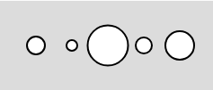
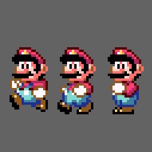

You may have already noticed that our bigger programs are starting to keep track of a lot of information. This inevitably ends up in the wonderful situation of numbered variables.
Open the Exploring Arrays workspace, which has five different size variables:
|
 |
let size0, size1, size2, size3, size4;
function setup() {
createCanvas(240, 100);
strokeWeight(2)
size0 = 20;
size1 = 12;
size2 = 45;
size3 = 18;
size4 = 32;
}
function draw() {
background(220);
ellipse(40, 50, size0);
ellipse(80, 50, size1);
ellipse(120, 50, size2);
ellipse(160, 50, size3);
ellipse(200, 50, size4);
}
|
Each circle has its own variable, and we've numbered them. This is not necessarily bad, but it doesn't scale well because it is a lot of copy-paste-change-ing of code. We can explore a more dynamic option that will allow us to do more.
An Array is a data structure, meaning it's designed to handle multiple pieces of data, allowing us to have fewer variables cluttering our code. Make the following changes:
1) Replace all the Global Variables with a single variable names sizes. It is responsible for an entire collection of sizes instead of just one.
let sizes;
2) In the setup function initialize sizes to be an array of the desired values.
sizes = [20,12,45,18,32];
This is a quick way of creating an array, known as an array literal because you literally know all the values that your want when you create it.
The sizes variable itself is a container for many variables
3) Since sizes now refers to the container for all the values, but in the draw function we need to access all the individual values for drawing. When an array is created, each location is put at a certain index, starting with 0. You can use square-brackets to access a value from the array.
The first value is at index 0, so it is sizes[0], the second value is sizes[1], and so forth.
Go to where the ellipses are being drawn in the draw function. Right now they refer to the old variables size0, size1, etc. Modify each of them to access a different location in the sizes array. The first one should change to:
ellipse(40, 50, sizes[0]);
Complete the other four and run the sketch again. You'll know if you've used the array properly if the same ellipses as before pop up.
The previous demonstration didn't use arrays in a way that is too beneficial, it consolidated all of the values into a single variable but replacing size0 with size[0] isn't a game changer.
Open the Indexed Circles workspace
let sizes;
function setup() {
createCanvas(100, 100);
strokeWeight(2)
sizes = [20,12,45,18,32];
}
function draw() {
background(220);
ellipse(width/2,height/2, sizes[0]);
}
The global variable is the same array of values as before, but this time we're only drawing a single circle with size[0] as the size. Looking at index 0 of the array we can see a 20, and running the sketch should confirm that it displays a circle that is 20 wide. Arrays are useful because the index that you provide can be a variable that changes states as your program runs.
Add a variable named index, and initialize it to 0 in the setup function. After that go to the draw function and change size[0] to size[index].
Since index is 0, running the sketch should give you the same 20px circle as before, but if you change the initialization of index to be 1, the width will be size[1], which is 12px (the second value in the array).
The use of variables as indices is what makes arrays powerful.
Index Cycling on Mouse Press
Now that you have a sketch where the size of the circle is based on the index variable, add a mousePressed() function to your sketch that will increase the index variable each time it's run. This will cause the circle to change to the next size when we click.
But increasing the index will eventually go beyond the boundaries of the array. If you run your program and click enough, it will eventually disappear. When you as an array for a value that's out of range, it gives you undefined to use as your size.
To have it infinitely cycle, make the index wrap around as well. The largest possible index should be 4, so use an if statement that will help the index go back to zero once it's been incremented past 4.
Fun Fact: We usually fill or stroke with three numbers, but there are a few Strings that we can use to quickly make some of the basic colors.
Open the Cycling Colors workspace:
function setup() {
createCanvas(100, 100);
strokeWeight(2)
}
function draw() {
background(255);
fill("red");
ellipse(width/2,height/2, 90);
}
The String "red" is translated into 255,0,0 behind the scenes to make it easy for us.
Your job will be two use this to your advantage to make a sketch that cycles through the colors "red" "white" and "blue".
To accomplish this, you will need to have two global variables: an array with the value ["red", "white" ,"blue"] assigned to it, and an index variable to track your current position in the array. Use the two variables to help decide the fill of the ellipse.
Instead of increasing the index on mouse press, do it at the end of the draw function. This will go very fast until you drop the frame rate (unless you are Xtreme and like the speed).
When attempting to animate character with images, you will need to represent each frame of animation with its own image. The challenge is deciding which image to display and when. Again we can use the structure of arrays to help us.
Open the Animating Images workspace
There you will be met with three images being loaded into variables. The starting code is there to show you how to load images into variables and then drawing them, but we will be making lots of changes.

The three images being loaded are three frames of animation that would make Mario walk when animated. They're currently displayed side-by-side.
Our animation strategy will involve creating an array with the frames that we want to see in the order that we want to see them animated. From there we can use a cycling strategy to show a different image in each frame.
Create a Global Variable named runImages
The purpose of this is to have the same images that are already being loaded, but in an array and in a specific order. In the setup function, after you've loaded run0, run1, and run2,
assign the following array to the runImages variable.
runImages = [run0,run1,run2,run1];
Notice that run1 appears twice. It is the leg-state that is in between the running and standing, so it has to happen between each frame.
We haven't actually created any new information, we're just organizing our images a little bit better.
Draw a Single Image from the Array
The draw function currently draws three different images around the screen. Change that function so that it only draws a single image, runImages[0], which should be the 'run0' image.
Run your code to make sure that the appropriate image appears, then change to runImages[1] and make sure that a different image appears.
Cycling Images
Now we need to cycle to a different image once per frame. Like we've been doing, create a number that will represent the index of the image that we want to display. At the end of each draw cycle, that index should be incremented and wrapped around to zero when appropriate, causing an infinite cycle of Marios.
Copy the following into your project:
let choices;
let index;
function setup() {
createCanvas(400, 100);
textAlign(CENTER, CENTER);
textSize(32);
choices = ["Rock", "Paper", "Scissors"];
index = -1
}
function draw() {
background(220);
if (index == -1) {
text("Click to Play", width / 2, height / 2);
} else {
text("I choose " + choices[index], width / 2, height / 2);
}
}
function mousePressed(){
}
This is the beginning of a basic rock-paper-scissors game. Notice that the variables are an array representing the choices, and an index to represent the choice.
What's strange is that the index variable is initialized to -1. This is not a valid index to use in the array, but if you look at the if statement in the draw function you'll see that it is a special value that's being looked for. When index is -1, the text "Click to Play" is displayed. Any other value for index will display that location's String.
Test out this function a few times with a different index each time to see the four different messages that can be displayed.
When the mouse is pressed, we want the program to make a random choice. The way that this sketch is designed means that the choice is tied to the value of index. We need to assign a random value to the index variable, which will cause it to display a different message. One attempt would be to add the following to the mousePressed() function:
index = random(3) //random number less than 3
This is a good attempt, but it makes a crucial mistake. Running the program should confirm that pressing the mouse does not function properly. The issue is that random(3) will return a random decimal in the range: 0 - 2.99999. The problem is that index needs to be an integer value like 0, 1, or 2, but instead it will be random decimals like: 1.2957392, 0.006845, or 2.8701. Since these are not whole numbers, choices[index] doesn't know what to return and you get undefined.
One common programming function is the floor() function, which is similar to a rounding function, except it will always round down. Its opposite is the ceiling function that always rounds up. The benefit of putting a random number through this function is that it will always produce an integer value:
Be Careful
Notice that this example has a random(5), but the largest number returned would be 4.999. This means that 5 will never be a returned value. Instead the numbers 0 through 4 are generated.
We can use the trick above to help us choose a random integer for index to be:
index = floor( random(3) ) //random INTEGER less than 3
Now running the sketch should allow a random Rock, Paper, Scissors choice to appear when you click the canvas.
...Lizard Spock
The five choice version of Rock-Paper-Scissors adds the choices Lizard and Spock to the mix. Change your initialization of choices to be:
choices = ["Rock", "Paper", "Scissors", "Lizard", "Spock"];
If you run your program now, you'll see that our code is not that adaptable. You can click as much as you want and you will never come across Lizard or Spock. This is because our code relies a little bit on hard coded values, which tend to work for one scenario, but fail if a little bit changes.
The problem is that we haven't changed the range of our random numbers. Previously we had chosen 3 because that's how many values the array had. Now that there are 5 values, that should be the number used. Make that change and run the sketch and you'll see that it now functions properly.
Writing Robust Code
The hard coded value means that we always have to change our code in multiple places when changing the number of choices in our array. Instead of manually counting up the number of values and typing a 3 or a 5, the random number could use the following:
index = floor( random( choices.length ));
choices.length?
Arrays are powerful pieces of data, they keep track of their own length for you. To access what the length is, you use dot notation. The line of code choices.length, means that we're trying to access the length variable that belongs to the choices variable. This is a confusing way of saying 'I don't know how many values there are, let's ask the array'.
The result is that we no longer have to manually change the random number statement to fit our choices. If you wanted to add "Sacco" to the list (obviously he beats all others), then all you have to do is change the array.
choices = ["Rock", "Paper", "Scissors", "Lizard", "Spock", "Sacco"];
Since the code is designed in a way that the random number's range is automatically tied to the length of the array, no changes need to be made to the random statement. While this doesn't necessarily make the original program any better, choosing to put choices.length instead of 3 the first time is a more elegant solution.